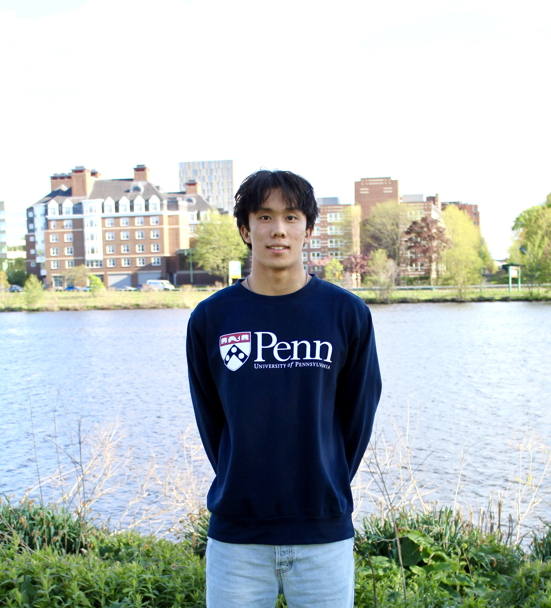

About Me
Student-Athlete & UPenn Wharton Commit
I am currently a junior at Cambridge Rindge and Latin School (Class of 2027) and an athletic recruit committed to the Wharton School of the University of Pennsylvania, where I will be pursuing Behavioral Economics and Finance. As a 4-star swim recruit competing nationally for Crimson Aquatics under Olympian Jacob Pebley, I hold multiple New England swimming records alongside national and international team trials qualifying times. Balancing rigorous academic pursuits with over 20 hours of weekly elite athletic training has shaped my dedication, leadership skills, and passion for excellence both in the pool and the classroom.
